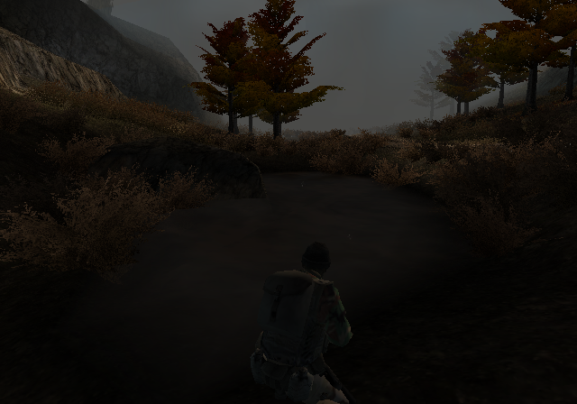

A timeline of the project from its first commit, 2026-09-02, to the present. Written for someone who wants to play the game, not for someone who wants to build it. The complicated parts are kept to one line per entry, for the curious, and everything else is the story.
What this is. SOCOM II is a PlayStation 2 game from 2003. This project turns the game's own code into a Windows and Linux program that runs from the player's own disc, draws with the PC's graphics card, plays sound through the PC's speakers, reads a PC controller, and plays online against a server the project hosts. Nothing of the game ships with it; the disc is the player's, and it has to be the North American r0001 pressing — a later pressing is refused with a message rather than half-working. What follows is how that was done, in the order it happened.
Who is in it. The owner is the person whose disc and PC this is and the person it is being made for; he appears from the third era on, mostly by noticing things nobody was testing for. Most of the building was done by AI agents working in a loop the owner steers, which is why the record is so dense and why it argues with itself so often.
How to read an entry. Each one has a date and a title, a line in bold that says why it mattered, a few sentences of what happened, and then three smaller things: How: is the one technical sentence, and can be skipped; But: is the qualification — the honest edge of the claim, which this project records rather than trims; and Cited: is the evidence, as commit hashes you can open in the repository and as run records. The run records live in a logs/ folder on the project's own machine rather than in the repository, so each one cited here is backed by a frozen witness — its first lines, its size and its hash — in docs/story/witnesses.json. Every dated claim in this document carries a citation, and a test in the repository fails if any of them stops pointing at something real.
Two clocks. Work in this project is often written up after midnight, so a few documents carry the next day's date for a commit stamped the day before. The dates here are the commits'.
What is not here. This is not the changelog, not the list of known problems, and not the account of how the project is run. Those are docs/KNOWN.md and the release notes, and where anything in this story disagrees with docs/KNOWN.md, KNOWN is right and this document is what gets fixed. A list of the sentences this story is not allowed to write — because the record does not support them — is kept beside its design, in docs/superpowers/specs/2026-09-19-sprint-11-goal-6-progress-story-design.md, section 7.2.
The ending is open. The last dated entry is the most recent commit at the time of writing. The section after it says where things stand tonight, and is the part that will be rewritten when there is a release to describe.
2026-09-02 .. 2026-09-07
From the disc to the screen
By the end of 2026-09-07 the program booted from the player's own disc, played its movies, took keyboard input through every menu screen and loaded the first single-player mission into a textured world — while online play still belonged to two copies of a console emulator, not to this program.
The program on the SOCOM II disc is 874 KB of loader. The game itself is locked in an encrypted archive beside it.
Two commits on the first day, and neither of them runs anything. The first is equipment: a harness that steps the PlayStation 2's main processor one instruction at a time, scripts to pull a function map out of Ghidra, and a decryptor for the archive. The second is the research that says what is inside — two code overlays that unpack to 2.2 MB and 1.7 MB, carrying the build stamp "SOCOM 2 r0001 17:22:21 Oct 11 2003" — plus a builder that wraps the loader and both overlays into one synthetic program file. The disc's protection asks the console for its hardware IDs while it decrypts, but those IDs feed a hash that is never checked against the content, so the archive is not tied to one machine.
Howthe harness runs the console's MIPS core under Unicorn and traps the PS2-only instruction encodings out to Python, because no off-the-shelf emulator understands them.
Butnothing of the game ran on day one — the day's output is a decryptor, a map and a file builder. And the archive opens only because of that unchecked hash, which is a quirk of the protection rather than a defeat of it.
Thirty-five commits in one day, and at the end of them the game's own code is C++ that compiles.
The protection layer is unwrapped without any hardware: it encrypts 131 of its own code blocks, and each one is decrypted by running the cipher offline instead of on a console. With that gone the archive decrypts end to end through an emulated kernel and disc. The recompiler is vendored and forked, the loader and both overlays go into one segmented program file, and the generated code links against a runtime with a game-specific override module. Most of the day goes on something less photogenic and more important: Ghidra's function map was wrong in ways that quietly corrupt everything — one 46 KB span of unrelated code had been folded into a single function, so calls into it resumed at the wrong place and returned garbage. The map was normalised and re-exported at 13,261 functions. The same day a Horizon server — a community-built stand-in for SOCOM II's shut-down online service — was set up on the same PC, three days before anything could talk to it.
HowGhidra writes Start, End and Size separately, and for a function whose body is split across ranges the three disagree; the fix recomputes End from Start plus Size and forces the missing entry points by hand.
Butcompiling is not running, and nothing of the game reached a screen on this day. Forcing entry points by hand also costs accuracy elsewhere: a forced function's end address runs on into read-only data, and the count of instructions the recompiler could not translate rose from about 11,000 to 114,000. The record calls that garbage that never executes. It is still there.
The game had been sitting on a black screen for a day, and the graphics were not the reason.
A full diagnosis of the render path concluded that every layer below the game was correct — the data was arriving, the vector unit was running programs, the rasterizer was faithfully writing the pixels it was given, the frame was being presented — and that the game simply was not asking for anything to be drawn, because it was waiting for a controller. So a controller was faked, and the game promptly wedged somewhere else. The real cause took a hardware watchpoint to find: the game asks Sony's device-bus manager how many bytes it received, the project's stand-in never wrote an answer, and the game read back an uninitialised number and copied that many bytes over its own heap. Five of those calls happen per boot; the third overran far enough to reach the texture registry. Answer every one of them and the intro video plays: 2,445 frames, about 250,000 of 287,000 pixels lit, no faults.
Howthe overwritten registry turned code words into pointers, which faulted, which the runtime silently retried forever — so the symptom was a hang with no error at all.
Butthe controller was a fiction with neutral input, a reported DualShock 2 that never pressed anything; real keyboard input arrived later the same day. And "every layer below the game is correct" did not survive the afternoon — three real delivery bugs turned up in that same path a few hours later, written into the same document as a second resolution.
Three bugs on one delivery path stood between the game and its own interface.
SOCOM II sends the constants its shell needs through one particular kind of transfer tag, and the program's chain walker treated that kind differently from every other. The camera's eye vector therefore never arrived at all, the backface test rejected every interface triangle, and nothing was ever submitted. Fixed, the shell drew — at 13 to 17 frames a second, because a software rasterizer was doing a swizzled memory read and a palette lookup for every texel of roughly a million textured pixels a frame. An OpenGL 3.3 backend that records the drawing commands on the game thread and replays them on the graphics thread took the same screen to 55 to 60, which the plan recorded as a steady 60. Two uncovered jump stubs were then recompiled, and the shell followed the disc's real first-boot sequence for the first time: memory-card prompt, loading warning, "no SOCOM data found", the Sony logo, the intro, and the main menu, driven from a keyboard.
Howthe last black screen of the day was not a rendering bug at all — the menu frame's alpha channel is zero, and the present was blending the finished picture to black.
Butthe menu that appeared had no button captions, no 3D roller and a black rectangle where the background movie belongs. The 60 is the menu's number and nothing else's; there was no mission to measure yet. And the project's own log credits this milestone to a commit, 60fe75c, that does not resolve in this repository — it predates the move into the project's own repo, and the log says so itself.
Seven commits, four fixes, and the Albania briefing hands off to a running level.
All four were the same kind of problem — the recompiler and the runtime disagreeing with the original code about where a function begins and ends. The dispatcher could not tell a scheduler unwind from a normal return, so a caller sometimes resumed holding the callee's registers. Interrupt handlers ran on whatever stack the interrupted thread happened to be using, and trampled live frames. 136 real functions sat in gaps the function map never listed, and a call into one of them silently did nothing. Six more ranges hid a second function that is only ever reached by pointer. With all four fixed, a scripted controller walks first boot to the main menu to NEW GAME to rank select to the Albania 5-1 briefing, five presses down to DEPLOY, and the level's own systems and AI scripts start up.
Howone of those 136 missing functions was four instructions long and was hit during "new game"; calling into nothing ended the run.
Butthe mission loaded and it ticked. It drew nothing. It is the one landmark in this stretch with no frame captured at all.
The thing starving the renderer was the automatic exposure control.
Once a mission is up, a background thread wakes on every vertical blank and reads about 176 pixels back out of the frame buffer to work out how bright the scene is. Reading pixels back off the graphics chip is a path the runtime does not have, so every one of those reads spun to its sixteen-million-iteration timeout — roughly a third of a second each — and the higher-priority thread starved the game down to one mission tick a minute. Replacing that readback with a fixed mid-grey pixel brought the mission to about twenty ticks a second, the geometry counter climbed from four thousand to seven hundred thousand, and the first in-mission frames appeared: flat world polygons and a night sky.
Hownothing was broken in the renderer; a spin loop with a very large bound was the whole defect.
Butflat grey, no textures, no HUD and a camera that does not move. The mission thread also still died about thirty seconds in, on a loop whose head the function map had split into a separate row — folded back together later the same day. And the mid-grey stub was a defect in waiting: because the exposure thread read a constant grey it asked for no brightening at all, which is half of why every gameplay frame drew 1.73 times too dark until it was found and fixed on 2026-09-16.
Instead of arguing about what looked wrong, the project started scoring itself against screenshots of the real game.
The harness captures a window without stealing focus, posts the same button presses to an emulator running the retail disc and to the program's own window, walks both through the same script, and scores the pairs into a report. The first report scored 6 of the 20 reference screens — mean 80.6, the main menu at 63.7 — and the other fourteen were never reached at all. It earned its keep immediately. The side-by-side showed every 2D element being drawn at the top-left corner, because the recompiled code was writing a vector register that is hardwired to (0,0,0,1) on real hardware and must never be written; text was being thrown away by a face-culling setting the graphics library leaves enabled; and four-bit palettes were being read in the wrong order, which is why the text was dim. Then the largest one: 29 hand-written substitutes for Sony's vector-maths library were multiplying matrices the wrong way round, so the camera's clipping matrix was wrong and every object in the scene failed the visibility test. Deleting the substitutes and recompiling Sony's own code brought the main menu's rotating 3D selector back and made the mission textured.
Howthe scoring is a per-screen picture comparison at 320x224, reported as one number between 0 and 100.
Buta picture score is not a correctness check. The report that closed the day graded the main menu 81.0 with the movie behind it still black, and across the day's four reports the same animated warning screen scored 79.2, 75.0, 78.0 and 74.9 on capture timing alone. Fourteen of the twenty reference screens were still not reached.
Every movie in the game was dying on its first tick over four stale bytes.
The project's stand-in for the PS2's movie library never cleared its work buffer when a player was created. The recompiled game then read the first word of that buffer to ask whether the movie had finished, found leftover bytes spelling UIMe from an unrelated file, and concluded it had already ended before a single frame was decoded. The real function clears the buffer. With that one line — and with the game's own feed callback run on the calling thread instead of parking the only thread that could feed the decoder — the Sony logo, the intro and the looping menu background all play. The main menu's score against the console went from 81.0 to 98.8.
Howthe movie player's finished flag was read out of a work buffer that was never cleared on creation; clearing it, as the real library does, is the whole fix.
But98.8 is one screen scored against one reference capture, and the parity report it was measured in is no longer on disk — the figure survives only where the research note and the log quote it. The same day's animated screens swing several points between runs on capture timing alone.
The first SOCOM II match played on this project's own server was not played by this project.
The Horizon server that had been sitting on the same PC since 2026-09-04 finally got a client. A retail disc running in the reference emulator went from LOGIN through SELECT UNIVERSE and ACCOUNT LOGIN to the SOCOM II ONLINE lobby, after three protocol fixes read straight out of the decompiled 1.50 client library. Then a second copy of the emulator, with its own memory card and a patch moving its network ports off the first one's, joined a game the first had created; both pressed READY and the match launched — VIGILANCE, round timer running, both screens in-game. The project's own executable reached the front door the same night: the game's network layer brought up on host sockets, the key exchange and stream cipher running on the host, and the server accepting its connection.
Howthe handler ids are assigned in registration order, so reading the live slot table out of the emulator's memory tells you which message is which.
Butthe match was played by two copies of a console emulator, not by this program. The project's executable got as far as LOGIN TO SOCOM II ONLINE and completed the transport handshake, then closed before it could ask for the list of universes. Everything — both clients and the server — was on one machine. And the server is the project's own stand-in, not Sony's.
By the end of 2026-09-11 the program booted the disc, drew its menus and its first mission the way the console draws them, ran that mission at tens of frames a second instead of a handful, could be walked and fired through it by a script, and could put two copies of itself into an online match on a server running on the same PC — where the players then stood still.
Two copies of the recompiled game log in, host a match, and join it.
The day before, the only thing that had reached a SOCOM II lobby was the retail disc running under an emulator. On this day the project's own executable did it. A stuck clock register was advanced so the program got as far as SELECT UNIVERSE; then a driver walked it through login, the on-screen keyboard, the licence agreement, the lobby and the briefing rooms, and it created a game called "test" on Medley. By the end of the night two instances were in the same match — one hosting as socomc, one joining as socome, both pressing READY, both loaded into VIGILANCE. The lobby, room and game-lobby screens scored 98.6 to 99.4 against the reference screens captured from the console emulator.
The project's own executable in the SOCOM II ONLINE lobby, on the server running on the same PC. The persona is the driver's test name; the panel in the corner is the runtime's own debugger, open by default in this era.
Howa second instance is just environment — its own window tag, its own memory-card folder, and a shift applied to the game's fixed network ports at bind time.
Butboth players were scripts, both ran on one PC, and the server was on that same PC. No two people, and no two machines, have played each other.
Every square root in the game had been returning zero.
The recompiler emitted the console's square-root instruction reading the wrong register, so the game always took the square root of register zero. The quaternion builder then divided by that zero, saturated to the largest float there is, and the actors' orientation matrices exploded — which drained the collision pool and dropped the player through the terrain. Two more faults came out the same day. Object geometry — trees, bushes, people, about 1700 triangles a frame — was arriving at the graphics chip as three identical points at the origin. And the camera's frustum test always answered "fully inside", because nothing ever wrote the flag register it read, which is where the giant sky polygons came from. The mission's pre-rendered intro movie, black for all sixty seconds of it, also started playing.
Howthe geometry fix is one rule — copy the whole packet when the program kicks it, which is what the console emulator does, instead of modelling the transfer a word at a time.
Buteach of these was settled by looking at the picture and at dumped memory against the emulator, not by any automated check. The project had no test suite and no gate until two days later.
The part of the console that draws SOCOM II's geometry was being simulated one cycle at a time.
The vector unit that transforms and lights every triangle had been emulated cycle by cycle, at about 100 nanoseconds per emulated cycle, which held the whole game to a few frames a second. A faster path that drops the per-cycle scheduler took that to 18 nanoseconds, and a translator that turns the game's own vector microcode into C++ took it to about 10 offline. With the graphics and scheduler work that followed on the same day, in-mission speed went 12.7, then 19, then 22 to 29, then 28.7 frames a second.
Howthe fast path and the generated code were both checked against the exact interpreter — same packets, same registers — and the mission program was regenerated from 900 recorded dumps of it.
Butthese are numbers from one developer's PC on one mission, not a steady-state figure for the game. And one piece of the speed-up was wrong: the same week's decision to stop counting the drawing unit's time against the game's own clock was reverted on 2026-09-17, and this story comes back to it.
The menu's own background movie was painting over its labels.
The title screen's text kept getting wiped. The game hands its label textures to the graphics chip against a stream of markers, and the program was acting on each marker one step early, so a 512x256 frame of the background movie landed on the labels before they were drawn. A second defect in the same family dragged a strip of stale menu movie back over the black screen that plays before a mission briefing. Both were fixed, and the game's rounding had been set the day before to chop the way the console's floating-point unit does, which mattered to where the labels landed.
Howthe transfer unit now stalls on the interrupt-bearing marker until the game clears it, instead of running straight past it.
Butthe title check is a score against reference screens, and four of its twenty-three captures missed for the whole of this period, so a pass meant nineteen of twenty-three. Those four turned out to be a defect rather than a limit of the check: once the menu stream stopped discarding its first fill on 2026-09-19, the stage scored twenty-three of twenty-three in one run; the release and playtest gates are back at nineteen.
The first mission is played: walk, turn, fire, and the game answers.
A script drove the first mission end to end — movement on the sticks, turning, firing — and the game responded, at 36 to 42 frames a second. The same day the project wrote down what "playable" would have to mean before it could claim it: a match ended by a shot or a grenade. It also added a lock so that two agents working at once could not build and run the game on top of each other.
Howpad state is injected from a file read on every poll, so a hold is exact and never dropped between frames.
Buta script walking a route is not a person playing, and the bar defined that day — a match ended by a shot — was not met in this era.
The online match now runs on the fast build — and then nobody moves.
With the faster drawing path in, two instances got all the way into online gameplay together rather than crawling through the menus. Then the round would not go anywhere. A network trace counted the traffic and dumped the first peer packets: the two copies were talking, at about one packet a second, and the record written that day said the match had stopped where the round begins.
Howthe peer channel was decoded far enough to rule out the transport — plain 22-byte game-level messages, acknowledged once a second, no encryption in the way.
Butthat description was wrong and the project retracted it. The round was running the whole time; the local player simply could not move.
SOCOM Unzipped, a test suite that runs, and one command that says PASS or FAIL.
The work moved into its own repository under the name SOCOM Unzipped. Until this day the unit tests had never been built with the project's own toolchain; once they were, 425 passed, and ./build.sh test exited zero for the first time. A single gate command was added that boots the game three times — the title screen, the transition into a mission, and the mission itself — scores each and returns a number. Its first run passed two of three: the mission never reached the heads-up display.
Howthe suite also replays recorded drawing programs against a committed golden state file, so a change that alters the output by one register is caught offline.
Buta test count is not correctness and neither is a green gate. The gate proves regression — it says the game looks like it did last time — and one of its three stages turned out to be measuring nothing at all, which is the last entry in this era.
The drawing program is no longer emulated microcode. It is C++ someone wrote by hand.
Reading the game's own drawing microcode, the night before, showed that a single dispatcher at a fixed entry point does all of it, and that its commands fall into families: flat interface panels first, then world objects with clipping and multi-pass work. Hand-written replacements were checked command by command against the original, and on this day the dispatcher was switched on by default after a gate that passed all three stages. By the end of the day the world-object families were running natively too — 123 of 166 recorded command lists, each one matching the emulated version exactly.
Howprograms are matched by a hash of their code plus their entry point, and anything the hand-written version does not handle is handed back to the emulated path part-way through a list.
Butthat clean gate was less clean than it read — its middle stage was one of the runs the next entry shows had measured nothing. And handing a list back part-way is exact only by luck of the recorded set: no program in it happens to branch on the flags in the four instruction pairs where it would matter, so a program that did would be unverified. That gap was still open at the end of the era. A plan to draw at higher than the console's resolution was examined the same day and refused as too invasive for the sprint.
One of the three gate stages had been measuring nothing at all.
The gate's middle stage is supposed to watch the screen go black as the game moves into a mission. It was counting black frames from anywhere in the run — including the black screens during boot — so it stayed green whether or not the game ever reached the fade. Worse, a save-to-memory-card dialog had started appearing on boot, and the probe answered it blindly, so it never got to the briefing at all. Six earlier runs were re-read against the fixed rule, and every one of them had examined zero frames in the window that counts, and passed anyway.
Howthe scorer now counts only frames at or after the step that triggers the fade, so a run that never reaches it scores zero and fails.
Butthis is the first of several occasions on which one of the project's own instruments turned out to be reporting a result it had not measured, and it is not the last.
By the end of these three days the program did not only draw SOCOM II, it played it: the intro movie was clean, the single-player mission stopped freezing for tens of seconds at a time, players could move in an online match again, and two copies of the program met on Frostfire and one killed the other.
The world could suddenly be drawn at up to four times the console's size. Three quarters of the screen looked exactly the same.
Until this day every frame was drawn at the console's 640x448 and stretched to fit the window. A new setting draws the 3D world at two, three or four times that size and hands the game back a console-sized picture, so nothing inside the game notices. At two times the full three-stage check passed and the edges of the world genuinely softened: on the matched frame, the fraction of edge pixels that are a smooth blend rather than a hard step went from 0.13 to 0.42. The HUD, the menus and the title screen did not change at all, because they are flat pictures at their original size and extra pixels cannot add detail that was never there.
Howrender targets carry a native size and a host size; vertices are multiplied by the scale after the offset subtraction, and anything the game reads back resolves through a native-sized mirror.
Butthe sprint's own design document had promised a sharper HUD, and that promise was measured wrong and withdrawn. The default stays at one times, the only gates that ran were at two times, and of those only the host-draw run passed all three stages in a single go.
A player had reported black tiles flickering over the movies. The tiles were real, and they were never in the movie.
The decoded movie was perfect. The fault was two threads sharing one note of which rectangle of the screen had just changed: the game thread kept overwriting it, so the copy to the graphics card refreshed the wrong patch and left stale black squares on the intro and on the title screen's moving background. Deleting one line fixed it. A checker written before the fix counts the blocks that are black on screen but not black in the decoded frame: nine before, zero after, and the underlying shortfall went from 3,748 missed refreshes to none.
HowexecuteUpload on the render thread read m_currentTransfer, which BeginTransfer on the game thread was also setting.
Butthe predicted cause, rectangles arriving half-delivered, accounted for none of the 3,748, so the fix that had been planned would have done nothing at all. And the checker that proves the result was wired into nothing — not the build, not the gate, not any committed run — until 2026-09-17, when it went into ./build.sh test against a committed fixture.
The game rolls dice in 249 places. For the whole life of the project, every roll had come up almost the lowest number it could.
SOCOM II turns a random draw into a fraction by dividing it by two billion. The project's stand-in for the C library's random function returned fifteen bits where the game expects thirty-one, so every fraction landed in the bottom 1/65536 of its range. Worse, the game seeds itself from its own previous draw, and that seed had frozen at 41 on the first boot and never moved again. One measured field that mixes in a random value went from 4.000021 to 5.5314, against 6.3338 on the real console. A second family of stand-ins repaired the same afternoon had the same shape: five maths routines were wired to the wrong registers and had been handing back whatever the previous call left behind.
Howthe stub now runs newlib's own generator over the guest's own _rand_next word rather than the host C runtime's.
Butnothing caught either of these for weeks. The parity gate had been green over them the entire time, because a defect present in every single run looks exactly like the reference. The maths routines turned out milder than first billed, since 19 of their 22 call sites happened to want the identity anyway; and the boot seed now comes from the host's wall clock, so runs are no longer identical to each other, and pinning that clock would not make them so.
For two days the online round had been written up as waiting to start. It was not waiting. The round was running and the player was pinned.
In a multiplayer match the game scales your movement by how recently the network was active. The project's stand-in for the PlayStation 2 network interface answered the "how much traffic have you seen" question with a constant, so the game concluded the network had been silent since boot and scaled movement to zero on the very first frame. Looking up and down still worked, because that is not one of the three fields the scale touches. The fix returns a real count of bytes received, and one match then carried both legs at once, on one binary: one instance with the fix on, the other with it deliberately switched off.
HowsceInetInterfaceControl code 0x200 now returns a live monotonic byte count instead of a hardcoded zero.
Butan hour and 46 minutes earlier a different commit had announced the cause, and it was wrong. Three calls matching three dead controls was a coincidence of counts, and the claim was withdrawn the same day. The side-by-side ran on one map, Medley; Frostfire stayed broken for another day for an entirely separate reason. And both facts that disproved the old description of the round as stuck at the start — that the round clock kept running, and that looking up and down still worked — had been sitting in the same paragraph as the claim the whole time.
Five beliefs died by measurement in one day. Somebody decided to write them down where they had been read.
KNOWN.md is a living list in four parts: what is proven and by which artefact, what is only believed and which experiment would settle it, what was retracted, and what will bite again. On the day it was created it already carried six dead sentences. Among them: that the reference console was showing the same frozen match this program was, that the player stood at the wrong height, that the online round was waiting for a go, that a named routine was zeroing the movement controls, and that a higher render scale would give a sharper HUD. The rule written into the file on day one is to retract on discovery, not at close-out.
Butthe file's own first note admits that its first three retractions were still false in the tree hours after being disproved. The sentence about the round waiting for a go was corrected here 21 minutes before the commit that actually fixed the underlying defect. The project's own note calls its lifetime two weeks; the commits make it two days, 2026-09-10 to 2026-09-12.
Striking a claim's headline is the easy half. The sentences that rested on it are the dangerous half.
Overnight the retracted sentences were struck in place, inside the documents where fresh sessions were still reading them, rather than quietly deleted. A follow-up commit titled "I broke my own rule" records the author catching their own list carrying two contradictory generations of the same measurement, and adopting a rule the sprint had learned painfully: cite item names and dated entries, never file-and-line, because line numbers rot the moment anyone edits above them. Two more corrections landed before dawn, both of them the author correcting themselves — one that changing a health default had not closed a false pass the way the entry had claimed, and one retracting a report that a test round had lost a player, when what had actually frozen was the camera record while that player walked 65 units.
Howthe day's smallest fix shows the standard the list is asking for — a screen-setup call had been reading three of its arguments from the wrong place, and the repair is pinned by a test that compares the program's bytes against the console's, byte for byte.
Butthis is close-out, not discovery. The project's own rule is to retract the moment a claim is disproved, and these sat false in the tree for hours; the file says so about itself. The screen-setup fix, for its part, has no visible effect anyone can point at — its benefit is believed to be nil.
On one map both players froze where they spawned. The ground was there. The game could not find it.
The game asks every frame whether there is ground under your feet, and online it stops you moving if the answer is no for 0.6 seconds. On Frostfire the answer was always no. The level's ground pieces had been filed into the lookup grid at the coordinates they hold before being moved into place, so every check searched the wrong squares. The cause was one missing constant: a hardware register that is always (0,0,0,1) on a real PlayStation 2 read as all zeros on every thread but the main one, and the level loader runs on another thread. After the fix both players moved for a whole 302-second round, and the ground check hit on every one of its 1332 and 1428 calls.
HowR5900Context() zeroed VU0's vf0, so vmaddw.xyz vf9, vf7, vf0w in the bounds transform silently dropped the translation term.
Buttwo earlier explanations were retracted on the way. One blamed a leftover byte that would have marked the player as a ghost — that chain is real, and it never fired. The other blamed an exhausted lookup grid — the census found 503 nodes and 7689 free, and the free list never ran out. The restored control rested on one usable run, and the project wrote down that a second Frostfire sample was owed before the map could be called fixed.
For a day the project's own grader had been scoring the opening cinematic and calling it gameplay.
The three-stage check the project measures itself with has a mission stage, and since the previous afternoon that stage had been passing on the intro cinematic instead of on a live game: the crop it used stripped the letterbox bars, so a letterboxed cutscene matched. The stage now demands lit bands on the uncropped frame, at least two held pairs of frames that actually move between captures, and one capture for every hold it logged. Five saved runs were re-scored from pass to fail and four stayed green. One of the five was the run filed that morning beside the Frostfire ground fix.
Butthe four runs that had been treated as live proof of a working mission had never held on real gameplay at all — only on the cinematic or on a help pop-up. The honest stage then failed immediately on the current tree, and that failure is how the next defect was found.
A frozen picture with a running clock is not a hung game. It is a queue.
In single-player gameplay the game thread recorded drawing commands faster than the graphics thread could replay them, and nothing pushed back. The backlog grew from 275 MB to 13 GB in four minutes, and the picture updated once every 5 to 25 seconds while the game underneath kept running normally. The game thread now waits at its own frame boundary whenever more than three frames are recorded but not yet drawn, with the wait capped at two seconds. A full mission run after the change held a peak of 299 MB and never hit the cap once.
Howthe wait sits at the recorder's VBlankStart, not in Present, because Present already runs on the graphics thread.
Butthe first version of the brake latched shut. A graphics thread that was busy but healthy looked stalled, and the game thread ran away again; a heartbeat fixed that in review the same day. The cure also carries a standing cost the project recorded immediately: with back-pressure in place the game slows down when the host machine is busy, so the parity gate became sensitive to whatever else is running on the PC.
"socomc fragged socome with M4A1." Then it happened twice more in the same lobby.
Two copies of the recompiled game logged in to the project's own server, met on Frostfire along a route picked by arithmetic rather than by eye, and one shot the other. Round 1's kill landed 99 seconds in: the victim's health went 1.0 to 0.298 to 0.0, the killer's single burst had landed 0.59 seconds earlier from 27.9 to 29.2 units away with no height difference between them, and both screens carried the killfeed line within a third of a second. Rounds 2 and 3 of the same session killed as well. Reaching the map at all supplied the second Frostfire sample the morning's ground fix had been owed. Every bar for what counts as a kill had been written down and committed before any of these matches were scored.
Both screens of ladder launch 2, round 1, a third of a second apart: the killer's on the left, the victim's on the right, the same killfeed line on each.
Howtwo independent readers — one watching the actor's health field, the other replaying the round's own state values — had to agree before a round counted as a kill.
Butthis is one launch, on one map, between two scripted copies of the program on one PC, against a server on that same PC; no second machine and no human on either end. The kill count stepped on the killer's instance only — what moved on both was the victim team's alive count, 0.02 seconds after the death on one side and 0.25 on the other. Round 4 of the same session fired 111 bursts at an aim error of 4.1 degrees that never corrected, and killed nobody. The test that pins this result as a fixture was written the following day.
The owner looked at the test frames and saw two things nobody had been looking for.
Work stopped on the sprint plan to chase what a person noticed in the gameplay screenshots: grey shards where Seeding Chaos should have water, and a single-player teleport whenever the player turned. The teleport got a confirmed cause. A graphics stub multiplied an address that was already a block number by eight, so seven separate parking slots in video memory collapsed onto two, and the game's animation clips were overwritten with the wrong chunks while the mission loaded. The water got a cause too, published at 13:39 and refuted by its own author at 13:46, when the shards turned up identical with the depth test switched off entirely.

The grey hill: the project's renderer replaying a frame recorded from the console, before the fix. No HUD, no brightening, and a slab where the ground should read.
Howthe libgraph vram_addr is already a 256-byte block number; the extra multiply by eight overflowed the 14-bit destination field, and a leftover packet recorded DBP=0x2000 where 0x3C00 was required.
Butneither defect was fixed in this window. Both were written up and paused. And the water shards had been sitting in every gameplay test frame for three sprints with no check flagging one of them.
By the end of 2026-09-17, on the owner's machine, the game started from a launcher window, ran the single-player mission with an Xbox pad, drew it at the brightness a console draws it, and made sound — while "online" still meant two scripted copies of the game on one PC talking to a server on that same PC, and the project's own audit spelled out why a stranger still could not do any of it.
A flick of the right stick could throw the player across the map and end the run, and the cause was one number multiplied by eight when it should have been left alone.
For days, about three seconds of turning in the single-player mission ended it on a MISSION FAILURE screen. At mission load the game parks 1.75 MB of video memory, in seven pieces, inside the buffer that holds the player's animation data, and puts it back afterwards — but the address it hands over was being scaled by eight, so the seven pieces landed on top of each other and the restore wrote them back over the animations. With the multiply dropped, a memory dump taken 255 seconds into a mission came back with 0 of 8 animation chunks damaged, where every earlier dump had 5 of 8. The automatic check then passed all three of its stages on the fixed build, with its brand-new mission-failure detector armed, after the same turn that had ended the previous build's run.
Howlibgraph's vram_addr is already the BITBLTBUF block field, so sceGsExecLoadImage and StoreImage must not scale it.
Buta live teleport count from the in-game probe was still owed at the end of the day. The fix is proven against memory dumps and a gate run, not against a counter watching the player move.
The automatic check that guarded every change could watch the player die and still call the run a pass.
The three-stage check — title screen, mission transition, mission — is the instrument everything after this leans on, and it had already been caught once: two days earlier it turned out to have been scoring the opening cinematic instead of gameplay. This is the day it gained the rest of its eyes. It now fails outright when the mission stage ends on a MISSION FAILURE screen, dismisses a HELP pop-up or a skippable cinematic before each held frame, scores the spawn view against a screenshot taken from a real console, and reads three numbers straight out of the running game: how high the player model's root sits, whether the player's movement is scaled to zero, and how many times the player teleported. Two of the scorers were rewritten to need no lock on the machine, so they can run while a game is running.
Howa written ruling promoted the in-game probe from a printed line to a scored one, once the probe's own defects were fixed.
Buton the very run that proved the block-pointer fix, all three of those new numbers came back NO-DATA — the readout was being printed before it was actually being taken, and a later run had to prove it. And it proves regression only.
Seven launches in one evening, and every one of them lost a button press on the way to the online lobby.
About one press in twenty went missing at 59 frames a second, and the path from the boot screen to the lobby is dozens of presses long, so a lost press cost the whole launch nearly every time. The scripted driver used to press a button and assume; now every fixed press on that path has to prove itself — ONLINE must be lit before the button goes in, the login screen must appear after it, and each way it can go wrong carries a name, so the next failure reads off one log line instead of a folder of screenshots. The presses also moved onto the pad file the game reads every frame, away from window messages that only arrive when the window thread happens to pump. On the night's run the kill repeated on all four rounds, and the aim correction that nudges a lead after a near miss fired live for the first time.
Howpress_verified sends the press, grabs a fresh frame, checks the screen it should be on, and re-sends up to three times before failing with a named class.
Butonly the first scorer called all four rounds a kill. The second, reading the game's own scoring values, gave kill, kill, then a round it would not attribute and a round with no rows to read — and the plan's stricter bar, two launches with both scorers agreeing, is recorded as not met.
"do something fun for me", and a few minutes later, "do you see my controller?"
This is the first time a person sat down and played the PC build instead of driving it with a script. He started on the keyboard; the Xbox pad went into the game's input path the same night — sticks, face buttons, shoulders and D-pad, with the sticks taking over from the keyboard past a fifteen per cent dead zone. Two things he reported set the order of everything that followed: "I'm getting no sound", and a flat grey patch of hillside that came and went. His priority list, in his order: water and ground first, then the online maps nobody had tried, then hardening, then audio, then the launcher.
Howevery automated run sets PS2X_HOST_GAMEPAD=0, because a configured pad makes the game skip the configuration screens the check keys on at boot.
Butthe session cost three full automatic runs. Free play saved a controller configuration onto the memory card that every check booted from; the boot then stopped showing the dialog the transition stage watched for, and the stage reported no transition rather than a wrong one. Each stage now boots from a fresh copy of a pristine card.
The grey hill in the owner's screenshot turned out to be three separate bugs, and one of them had been dimming every frame of the game.
SOCOM II finishes a frame by drawing it back over itself to brighten it. The project's renderer mapped that step to "do nothing" and threw the brightening away, so every gameplay frame came out 1.73 times too dark, and the water's dark bed pass — the thing that brightening exists to lift — stayed a set of flat grey slabs. Underneath it, the part of the game that measures how bright the scene is was being handed a constant mid-grey pixel instead of real ones, so it asked for no brightening at all. The holes in the ground were a third thing, and the afternoon's answer for them — that the missing terrain never reached the drawing hardware at all — did not survive the evening. What actually happened is that a drawing program needing more cycles than its budget allowed was left half-finished and the next chunk in the queue resumed it from the wrong place, so a patch of terrain drew two polygons instead of twenty-eight, and which patch got cut depended on how busy the machine was, which is why the hole wandered.
The same recorded frame after the brighten pass was restored. Same scene, same camera; the difference is the whole of the defect.
Howthe backend had mapped the game's brighten-by-redrawing pass to nothing; the terrain cut came from a drawing program left half-finished when the next one started, where real hardware waits for it to end.
Butthis is the third explanation for those grey shards. The first blamed the renderer's depth precision, and one run killed it the same hour: with the depth test switched off entirely the shards came back identical, and a disabled depth test cannot cause a depth-test artefact. The theory that replaced it is superseded here too, and research note 26 still carries that dead replacement as its live candidate; one piece also stays open, a flag-timing difference in the recompiler that decides which objects take the clipped drawing path.
A round would start, the clock would count down, and nobody could move — the renderer was quietly eating most of every second.
The brightening fix carried a cost nobody saw for a day: it minted a fresh id for every palette the game loaded, and SOCOM II alternates palettes on consecutive draws. An online round reached 55,483 cached textures and 64,000 texture uploads a second, the render thread fell to two frames a second, and the game's own clock crawled at 0.04 seconds per wall second — STARTING ROUND stood on the screen and never cleared, on all three maps it was tried on, while the network's round clock ran on without it. Keying a palette by its contents instead of its load order put the cache back to 292 entries and the round back to 43-45 frames a second. The other half of the problem was older and quieter: since 2026-09-08 the game's timers had been told to ignore the time spent drawing and the time spent waiting for the renderer — about 195 and 290 milliseconds out of every second — so the whole game had been running at roughly two thirds speed. It counts wall time now, and both sides of a control round read one second per second.
Howa bisect over four of the project's own launches found the regression; the old behaviour survives behind PS2X_CLOCK_EXCLUDE=1 for an A/B.
Butthe clock change's own run passed the title and mission stages and failed the transition stage, because that stage's black-frame floor had been calibrated on the slow clock and a wall-speed transition is simply shorter. The floor was recalibrated, test first. And the freeze it fixed was the project's own regression, one day old.
Between a quarter past midnight and a quarter to five, every online map nobody had ever tried got a round of its own.
A queue ran one round on each of the twenty maps that had never been driven online: two copies of the game log in, one hosts, the map is chosen by name, both sides walk their route, nobody shoots, and the round runs to its clock. Seventeen played on the first pass and The Mixer on the retry — eighteen of twenty. Two did not: Foxhunt, whose round ran to its clock but whose walking player stepped off a 110-unit drop and took fall damage, failing the harness's own no-damage check, and Requiem, where the joining side's movement holds came out under the bar on both passes. Requiem fell out first, on the morning's wall-time clock fix from the entry above, which turned the joiner's 13-unit hold into 128 — it had never been a Requiem problem. Foxhunt needed the afternoon: the driver was taught that a sudden height drop is a fall and not damage, and only then did all twenty play.
How a map is chosen without counting presses: the driver matches the highlighted row against a reference and only then confirms. This is Foxhunt, the map that needed the fall guard.
Howthe map is confirmed by matching the highlighted row against a reference image, rather than counting presses down a scrolling list.
Buta control round is a scripted, no-kill walk between two copies of the game on one PC against a server on the same machine. The research note's own headline is still "18 of 20", and no map other than Frostfire has a route that ends in a kill.
It had never made a noise; in one day it got effects, voices, mission music and a title theme.
Four steps, in order. First a host mixer that runs the game's little sound scripts and its synthesiser voices, so the menu clicks land. Then the mission's voice-overs and music, read straight out of the disc image and resampled — a 32-bit file seek had been failing silently past two gigabytes, which is why no mission stream had ever played. Then the title music, which the game decodes itself and pushes into a ring the sound hardware plays, and which took nineteen instrumented title runs to get right: the first attempt at a fix stopped the decoder when the game refused a packet, and this game treats a short read as "finished", drops the rest, and then polls the decoder 340,000 times a second with nothing in it. With the decoder always taking its whole input the mixed output matched the disc's own audio at a correlation of 0.99 across both the intro movie and the title loop, offset advancing exactly one to one — and a fourth fix later the same day, stopping an ordinary disc read from moving the streaming cursor, took the title loop to 1.000.
Howrefused audio is copied aside and re-offered in order before newer audio, so nothing is lost and nothing stalls.
Butall of this is measured against the disc, not heard. The owner's own listen was still an open item at the end of the day; his verdict partway through was "still nowhere near accurate; the opening video seems okay; mission audio good", and the first ten seconds after each stream starts still fill short while the pipeline settles.
The project got a front door: a window that checks your disc, sets the picture, shows your controller moving, and starts the game.
The launcher is a small window that sits beside the game and owns its settings file. It reads the disc image you point it at, looks inside for the game's own executable, hashes that file against the digest of the r0001 disc this recompilation was made from, and keeps the Launch button off until it matches. It sets the picture size and sharpness, shows the pad live with the same readings the game's input poll will make, picks a profile and a server, and copies the last log and the settings into a diagnostics folder when something goes wrong. A script turns a finished build into a 285 MB folder and a 63 MB zip, with a README and the licences.
The launcher's first cut: a disc path, three picture settings, a drawn pad, a server and a profile, and a Launch button that stays off until the disc matches.
Howthe disc check walks the ISO 9660 root directory for SCUS_972.75; --selftest prints the verified disc and the environment without starting the game.
Butnothing about how the launcher looks, or how it handles a pad, had been tried by a person — the owner's hands-on check was written down as owed, and the zip has never been run on a clean machine by anyone. Both server presets shipped as deliberate placeholders, because no hosted server existed yet.
Four read-only reviews were run against the project's own goal sentence on the same day the launcher shipped, and the answer was that the game plays and nobody else can get to it.
The verdict was blunt: a stranger still cannot play, and the reasons are plumbing rather than gameplay. The launcher never handed the game the disc it had just verified; a server given by name instead of a number was silently thrown away; the server advertised the developer's own home-network address to anyone who connected, with no way to override it; and the launcher's default server pointed at the machine it was running on. All four were fixed the same day. The next sprint opened on the same theme: a PC whose graphics driver cannot do what the renderer needs now gets one line naming exactly what is missing, runs on the slow CPU renderer instead of a black window, and exits with a code the launcher turns into a sentence. A scheduling fix landed beside it too — threads of equal priority had been sliced against each other, which the real console never does — and after it, seven of seven driven control rounds that reached the lobby played to their clock.
Howthe capability probe reads the GL version, dual-source blending and clip control once and latches the answer; PS2X_GS_GL_FORCE_FAIL=1 forces the fallback path for a gate.
Butthe audit's biggest gap was left untouched. Every online result in this project is two driven copies of the game on one machine behind one router; no two people on two machines have ever played each other, and that is the gap the next sprint was opened to close.
By the end of this era a player with their own SOCOM II disc could unzip a 56 MB download, open a launcher with nine pages and a drawn controller, start the game on Windows or Linux, save to a memory card, report a bug from inside it, and play an online round against a server the project hosts in Ohio — but only the owner's own PC has ever done any of it, driving two copies of itself, and the first build cut for a person to play was failed by that person on its first evening.
The front door stopped assuming everyone owns the same controller.
Four agents working in the same hour added the settings a player actually looks for: a list of the pads that are plugged in, with the chosen one drawn live as you move it; a frame-rate line in the corner; detail, resolution and volume; and a choice of microphone. One pad selection and one dead zone now serve all three places in the program that read a controller — before this every one of them took the first pad it found, and only one of them ignored a resting stick. The same day the online sprint was merged, one of only three merges in the whole history, carrying with it the fix that finally made driven online runs reliable: the automated lobby had been reaching gameplay 6 times in 10, and went to 10 in 10.
Howthe harness's 90 ms press was falling between two polls of a login screen running at 12-30 frames a second; a 2 ms sampler now latches every press until at least one poll has seen it.
Butthat latch commit was cut while another agent held the same file, so it carried three of that agent's lines and does not build on its own — the launcher commit is what restores it. The pad settings themselves are proven by tests and by one scored run; nobody has held a real pad and said they feel right.
The owner said the sound stopped working halfway through a mission, and it had.
Three complaints from one evening of play turned out to be three different faults. Sound dying mid-mission was a playback slot that was never handed back: after six plays every request for one failed, 237 times in the owner's log. The splice and the buzz in the online menus were a ring buffer with no agreement about who had filled what, so a block that arrived late was skipped and a block never refilled played again. The largest sat underneath both — a routine the game calls whenever another part of it starts up was resetting the entire sound model, unloading the sound banks that had just been loaded. That was 971 rejected plays in one log, each of them the game asking for a sound the program had quietly thrown away. A second driven mission took those numbers to zero unknown banks and one slot exhaustion.
HowsceSifInitRpc reset the IOP model on every call rather than only the first, and a VAG stream that ended by itself never freed its slot.
Butthose are measurements of a driven mission, not a listen. The owner's verdict the following day was still no, which opened another round of music work that is also unconfirmed by ear.
The owner asked for Linux in the morning, offered a spare virtual machine, and by that evening the game was drawing frames on Ubuntu.
An Ubuntu 24.04 machine, a build job on GitHub's Linux runners and the port itself all landed the same day, under one rule: the Windows build stays byte-for-byte the same. The boot frame captured in the virtual machine differs from the Windows frame by 0.008 grey levels against a bar of 3, and the driven title check passes there at Windows' own 19 of 23. The launcher, unpacked from the Linux tarball, started the game with a log whose first lines match a Windows run's. The first time the C++ test suite ever ran on Linux it paid for itself: the system allocator aborted on a double free in the audio mixer that Windows had been quietly tolerating for the life of the project.
The first thing the game says on Ubuntu, inside the virtual machine: the same controller prompt Windows shows at boot, drawn by the software renderer.
Howa refused stream header closed its file twice — two owners, one handle — fixed under a test that fails on Windows too.
Butevery Linux number was read inside a virtual machine on a software renderer running at 0.8 to 2.9 frames a second. No real Linux machine or graphics card has ever run it, and the recompile step and the Windows-only scripts stay behind. The sync that carries the tree into the machine was also handing over the host's timestamps, so the guest could link an object it had already replaced — found only when a build failed on a function that was sitting right there in the source.
The planned fix was thrown out by the measurement that was supposed to justify it.
The login and lobby screens had been the expensive part of the program, and the plan was to group the draw calls together. A new trace split the cost of the upload path term by term and showed the cost was somewhere else entirely, so the grouping was never built. The real cause was that the texture cache re-decoded itself every frame: any upload anywhere moved a counter, and a moved counter threw the whole cache away. Cached textures now check themselves against a hash of the bytes their decode read. Lobby decodes went from 1331 a second to none and the lobby from 52 to 57 frames a second; with four cores of the host deliberately busy, the login screen holds 58 to 60.
Howon a stale counter the same decode walk runs over the current memory, and a matching hash re-stamps the entry instead of decoding it.
Butmeasured on the login screen and in the lobby, not in a mission; there is still no steady gameplay frame rate on a clean host. The plan's own cost budget was never met and was let go in favour of the symptom it stood for, and a passing parity run proves no worse than last time, never correct.
Two things every finished game has, and this one did not.
The owner tried to save and was told no memory card was inserted. The card stub had never created or even looked at a card folder, reported a constant amount of free space, and wrote the card's type only for the port and slot pairs it happened to like. Now the first port always holds an inserted, formatted card whose folder is made on demand, free space is counted from what the folder actually contains, and a guest path is checked one component at a time — the tests found that a climbing path really did write outside the card root on Windows. A driven save then wrote 12 files and 3020 KB to an empty folder, and a second launch on the same folder read the profile and seven saves back with no prompt at all. The headset was the other one: the program had been answering the game's status question with the wrong number, so the game had never opened the microphone.
Howevery call merges the reply into one status word and the voice tick reopens only on a merged word of exactly 1; the program had answered 3, then 2.
Butno voice has ever travelled. All sixteen pad buttons were held for three seconds each in a live round and nothing started recording — the talk action is not bound in the control preset the disc loads — so the honest expectation is still that the other side hears nothing. The card fix is proven by the harness; the owner's own retry at the save prompt is still open.
Up to now the front door was a box with some checkboxes in it.
The owner asked for a proper launcher and got one: a rail that started at eight pages — PLAY, DISC, VIDEO, AUDIO, CONTROLLER, MICROPHONE, ONLINE, ABOUT — and gained a ninth the same day, one focus model that behaves identically for mouse, keyboard and pad, open-licence type embedded in the executable so the portable folder stays self-contained, and a controller drawn from scratch whose buttons and sticks light up as you press them. A screenshot mode renders every page from a fixed fake state, so the work can be looked at without launching anything. A second pass answered the owner's notes: legible type at every size, a frameless window with its own top bar, one authored controller outline, a palette sampled from the SOCOM II logo. A later pass killed the flash in the top-left corner on every page change.
The redesigned launcher's CONTROLLER page, rendered by its own screenshot mode from a fixed fake state: the rail, the drawn pad, and what each button will mean to the game.
Howthe frame was being drawn from the old page's node list, so for one frame every label landed at the origin; the list is rebuilt after the page changes now.
Butno human has judged it. It is proven by tests and by screenshots the loop reviewed itself; several owner checks on the look and the pad feel are still open, and the mouse support it currently advertises is scheduled to be deleted.
Every online round the project had ever played was against a server sitting on the same desk.
On the owner's word a small rented machine went up in Ohio with a static address, start-up units, an installer and a control script that rewrites the advertised address everywhere it appears. The launcher's SOCOM Unzipped entry stopped being a placeholder and became the default. A control round then ran to its clock over the internet, both round clocks in step to the second, and a ladder took two kills in four rounds on a single lobby session. The server also learned to introduce itself — a message of the day, a channel name and a location that are settings rather than constants, with live statistics served for the project's site.
Round 1 of the hosted ladder, from the host's side, moments after the kill: the first round ever played against a server that was not on the same desk.
Howan unattended upgrade restarted the stack mid-round, so the box is now told never to restart those units.
Butboth players were driven copies on the owner's one PC, behind one home network. Two different networks have never been exercised and no two humans have ever played each other. The game does keep saved personas per server, though the record still cannot say whether the key is the resolved address or the name the server hands the client; either way the box's address is load-bearing, and moving it risks orphaning every saved persona.
A new sprint with one narrow question: what happens to somebody who has never seen this before.
Every way the program can refuse now has a number and a plain sentence, shared by the runner, the launcher and the test suite, and the disc, the game file and the card folder are checked before any window opens. Started with no launcher at all, the runner reads the launcher's own settings file. The LAST RUN line says what happened in words, and SAVE DIAGNOSTICS writes one scrubbed zip instead of copying a folder around. The download was then measured rather than guessed: a release build in its own tree, both executables stripped with their debug symbols kept beside them, and the portable folder cut to what the executables actually import — 15 of the 31 shipped Windows libraries turned out to be needed by nothing. The Windows zip came down 15 percent to 55.7 MB and the Linux one 13 percent, and the parity run passed three of three on that exact stripped executable.
Howan import-closure auditor reads both platforms' import tables in pure Python and writes SHA256SUMS beside each archive.
Butthe download is unsigned, so Windows will still warn a stranger who runs it. Two of the user-visible promises — that a double-clicked executable lets go of its console window, and that a missing audio device is reported on screen — are believed rather than proven and need a person. And the same run that scored the release build still reads the player skeleton's root node about 0.8 low against the console, and passes inside its own tolerance.
This is the only place in the whole program where a player can talk back.
A REPORT A BUG page joined the rail, between ONLINE and ABOUT, mirroring the form on the project's website: a title, what happened, an optional way to reach you, and a preview that says exactly what SEND would send before anything is sent. Attaching the last run's log is off by default, and when it is on the log is cut to 65,536 bytes and scrubbed of your home folder and the folder your disc sits in. The ONLINE page gained a line that asks the server how it is doing every ten seconds and draws nothing when it cannot be reached. Five answers a server can give — accepted, rejected, rate-limited, server error, refused connection — were driven against a local one in eight tests, which pass on Windows and on the Linux job.
Howthe transport is WinHTTP on Windows and a curl subprocess on Linux, certificate checks on, and plain http is refused anywhere but loopback.
Butexactly one real report has ever been sent, from Windows, and the Linux half of the bar is still owed. The project's own notes briefly recorded that report as unevidenced: the id is stored in lower case and displayed in upper case, and the local copy of the site's inbox had last synced 35 minutes before the report arrived. It was found on the box the next day. Nobody has judged the page's wording or how it feels with a pad.
Not one of these came out of a test; they came out of somebody trying to play.
Escape closed the game instead of pausing it, because the exit key the graphics library sets by default had never been turned off; it is Start now, and so is Enter. The Runtime Debugger panel opened over the game on every launch, for everyone, because it defaulted to visible. A PC pad could never crouch at all — SOCOM II reads how hard Triangle is pressed and the PC pad reported every press as full, so the button could only go prone; a shortcut now sends a light Triangle from the left stick click. And while a mission was running the launcher was still reading the pad behind it, so the player's aiming stick was walking a focus ring around a window they could not see, and Start was asking for a second launch. The music took two rounds of work the same day: a fade that was instant and never reached streams, a menu stream whose first fill was thrown away, then a queue instead of a replacement, a fade that no longer outlives the cue it belonged to, and loop flags the stream decoder had never read.
Howevery pad reading in the launcher now passes through one pure gate that is the only thing which knows the game may own the pad.
Butthe pause key has no test of its own — it needs a window, and the owner's next run is its proof. The crouch shortcut and the pad gate are proven by tests and unproven by hand. The music is not confirmed by ear either: the owner's verdict on the first round was no, and the second round measured inert in the only mission driven — 55 stream requests, none queued, none replaced — so what they heard is still unexplained.
The worst thing in this era is not a bug in the game.
A monitoring site the project had put online had no login and would serve almost any file under the repository root. By the code that included the virtual machine's private key, the repository's own git objects, server configuration, notes naming the owner's home address, and server logs carrying an account name and its token. Two provisioning web servers started to set up the virtual machine were also left running on the local network, one of them listing the key folder. The door was open from 2026-09-16 at 22:03 UTC to 2026-09-19 at 03:36 UTC, and the tunnel software keeps no request log, so whether anything was fetched cannot be shown either way. Both servers were killed, the routes were cut to an allow list bound to the local machine, the keys were rotated and the address was taken out of the tree, and the public hostname now sits behind a login proven to turn an anonymous request away before it reaches anything at all.
Howthe rule written down for future agents is that a helper server binds to the local machine only, serves one named directory, and is killed by the same task that started it.
Butit is not finished. The address is gone from the working tree but still in the history, which is why the repository cannot be made public as it stands, and a service-token secret pasted into a chat transcript is still live and unrotated — a note that had called that secret dead was tested and retracted. A second-order version of the same question was answered the same day: the launcher's profile had been a path rather than a name, so a shared settings file could have put the game's card writes anywhere on the machine.
The last commit in this history swaps a number for a name.
The launcher now points at socom.scotho.com by default, with the plain address kept as a fourth choice, because a name that fails to resolve makes the runtime fall back silently to the local machine and the player would see nothing but an unexplained connection failure. Four existing tests failed on the change and were moved to the new truth rather than relaxed. It was the last change before the candidate build, and the last entry in this history that is about the program rather than about a person using it.
Butthe oldest gap of all is still open: no two people, on two machines, on two networks, have ever played each other.
Building it found two defects that would have shipped. Playing it found the one this whole sprint was for.
The candidate was packaged from the release build, checked by the three-stage run on the exact executable inside the archive, and tagged playtest-1: a 55.8 MB zip with its own checksum file. Getting there took longer than the hour it was given. The archive would not build at all, because a bug-report feature added earlier in the week had given the launcher a new dependency on a Windows system library, and the list that decides which libraries a portable folder must carry and which it must never carry did not know that library's name — and the check that would have said so only runs when a release is packaged, so it had sat unnoticed since the feature landed. Then the archive came out 7 MB heavier than the one the sprint had measured, and the reason was that a decision made six days earlier — build at the lower optimisation level, because the higher one made a larger download — had been recorded in three documents and applied in none; the build script's default had never been changed. Both were fixed under tests watched failing first, and the second of them is now a test that reads the build script and asserts the ruled value, because a ruling written in prose cannot fail. Then the owner sat down with the archive and the fourteen-step script written for the evening, and stopped at step six: the mission music. The same symptoms as before — louder and quieter, jumping between tracks, splices — with all three of the week's music fixes in the build.
The playtest candidate in the first mission, at the end of the gate's scripted walk, with the game's own stance tutorial up. This is the build the owner played that evening.
Howthe trace the fixes were built on showed the mission never queues a stream at all — 55 requests, none queued, none replaced — so the fixes were protocol-correct and inert, and the fault was never reproduced by any instrument before it was declared fixed.
Butthe packaging failure had a shape worth remembering: the audit stopped correctly, but the build script had already emptied the folder it was about to refill, the packaging step then refused, and the previous archive — twelve hours old and plausible in every way — stayed exactly where it was. A tag placed on that folder rather than on the run that filled it would have handed the owner a build with none of the week's fixes in it and no symptom. The person driving the build also masked the failure for several minutes by piping its output through a command that always succeeds. And the honest answer to the owner's question — how do we know the music is playing accurately at all — is that today the project cannot: every audio measurement it has ever made compared its own output to its own output. That investigation now leads the second half of the sprint, ahead of everything.
This section is not an entry and carries no Cited: line: it is the view from the end of the record, written the night the record ends. When there is a release to describe, it is replaced by entries with citations like every other.
The tree stands at d105d32, 745 commits, on the branch sprint-9, with one tag, playtest-1, on the last of them. Sprint 9 — "a stranger's first run" — has finished its first half, whose purpose was to make one evening of play worth the owner's time. The owner gave it the evening and stopped at the sixth step: the mission music, which three fixes this week were supposed to have settled, sounds the way it did before any of them. The second half of the sprint therefore opens not with the work that was planned for it but with an investigation, under an instruction the owner wrote in plain words: real confidence that the fault is understood before anyone writes another fix. That is the right order, and it is the order this project has had to relearn more than once in the eighteen days above. The first lead, under investigation as this is written and confirmed by nothing yet: the mission music is built from stems a few seconds long, and the game chains them by asking whether the last one has finished and starting the next the moment the answer is yes — so every seam crosses the program's whole start-up latency, and no counter the project ever kept knew a seam existed. Whether the real console has the same seam is what a reference capture — the first console audio this project has ever recorded — is being asked tonight.
After that: the instruments that would notice if the music broke again, the retirement of most of the two hundred environment knobs a stranger should never see, and the merge that ends in v0.9.0. Beyond that, two sprints are drafted — console players in the same lobby as PC players, and a public repository a stranger can trust — and this document is part of the second one.
No stranger has played yet. No two humans have played each other. Those are the two sentences this story most wants to replace.
How this document is checked
Every Cited: line is parsed and verified by tools_py/story/cite.py, which runs in the project's Python suite:
python -m tools_py.story.cite
A commit hash must resolve, be unambiguous, be reachable from the published branch, and the words beside it must come from that commit's real subject line. A run or gate id must have a frozen witness in docs/story/witnesses.json — a copy of the evidence's first lines, its size and its hash — because the project's run logs are not in the repository and a reader cannot open them; on a machine that has the logs, the witness is re-proved against the file. A tracked path must be tracked. The machine-readable form of this timeline is docs/story/timeline.json, and the test fails if it and this document disagree in either direction. The design, and the reasons for each of those rules, is docs/superpowers/specs/2026-09-19-sprint-11-goal-6-progress-story-design.md.


{kind=link}
{kind=link}
{kind=link}